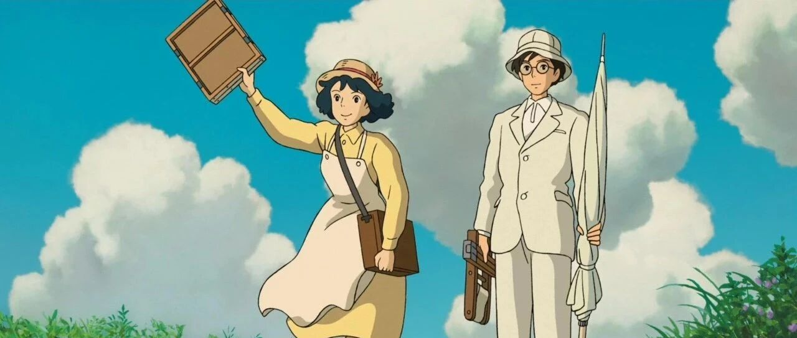

书单 ｜这4本宝藏书，迷茫的时候就看吧！
点击关注秋秋很开心
每周一篇好用APP、学习、成长干货

图：@网络
文：@秋秋
大家好，我是秋秋。
出去玩的这一周什么都好，就是没有时间看书，所以回来之后立马行动起来。
这次安利的这几本书，真的会让你的心情变平静、变坚定！总之，非常适合迷茫的时候看。
1、《起风了》

很多人可能都听过同名歌曲《起风了》：
从前初识这世界
万般留恋
看着天边似在眼前
也甘愿赴汤蹈火再走它一遍
……
其实《起风了》不光有歌曲，还有宫崎骏的同名电影和堀辰雄的同名小说。
建议打开音乐观看接下来内容：

而《起风了》这本小说，就是电影的的灵感来源。
也许你不熟悉堀辰雄，但是宫崎骏自言十分喜欢他的作品，常年都一读再读。
堀辰雄也是作家芥川龙之介的唯一弟子。

他的作品那种氛围感、留白感，真的很适合当代生活节奏非常快的年轻人。
小说和电影差别还是有点大的。
小说主要是是讲了以作家本人为原型的主人公，遇到喜欢绘画的美少女节子，签订婚约。
随后节子患上了肺结核，两人来到疗养院养病，节子去世，作家将我与节子的故事写成小说，并参悟人生的故事。
在书里，节子和作家的爱情很让人动容。

前面节子会努力掩饰自己的病情，因为不想在爱的人面前显示脆弱，让他担心。
后面节子去世，作家才意识到今后所见之处，都是爱人的模样。
// 以前，我们还没在一起的时候，我就想过和你这样可爱的姑娘跑到荒凉的山里去，享受二人世界。
// 我原以为，自己人生的光亮，就只有这么一点；而实际上，就跟这小屋的灯光一样，比我自己想象的要多得多。
// 很久很久以后，如果我能回忆起这个美丽的黄昏，大概会从中找到描绘着我们幸福的完美画面吧......

風立ちぬ、いざ行きめやも。
起风了，意味着 : 人生无常，合当奋意向前。
看完这本书，你会觉得很有力量。
这种力量不是大喊我明天要更努力之类的，而是“无常如风起，人生不可弃”，一种内心的坚定。
如果你当下觉得迷茫、浮躁，不妨看看这本书。
下面是购买链接，点阅读原文那里是优惠19元一本的：
2、《我是猫》

真的，怎么会有这么可爱！这么深刻的书。
就是看的时候会觉得很讽刺，但又很搞笑、很荒唐、很舒适。
这本书是以猫的视角看人类世界，所以有很多奇思妙想。
猫的主人是一个教师，他在外人面前看起来是很爱学习有文化的样子。
但是猫的眼中，他是看了几页书就睡觉，十次进他的书房有九次都呼呼大睡的形象（简直就是我本人）。

猫的眼中，人类也非常有趣，甚至想想确实它说的还有几分道理。
比如，人会做很多复杂的事情，把食物用各种方式烹饪，还会搭配各种酱料。
这对于猫来说，人类真的很闲哦，才会把好多时间放在这些事情上！
想想也是，我们每一餐每一次穿，都挺费功夫。
另外，人类还会买卖土地。
在猫的眼中，土地就是自大然的造物，类似空气山川河流，你人类还能买卖了？
那这样是不是空气，也可以分为你的我的，一包包的出售？

总之，从猫的视角看人类世界，也让我们有所反思。
是不是我们人类更容易陷入世俗的事情中去？
追求所谓上流生活，不过是人类自我意淫的阶级秩序？
当然，猫本身也很可爱。
为了有个容身之处，对主人假装友好，碰到邻居家的大猫，打不过还会阿谀奉承。
捉老鼠、吃年糕都笨头笨脑，但是头脑却还很聪明。
总之看这本书的时候就觉得特别轻松，就是书有点厚，我现在还没看完。
3、《工薪族财务自由说明书》

这本书就没有那么有年代感了，书的作者是也大，他还有自己的公众号，叫做【也谈钱】。
这本书我看完快一个月了，现在，他也是我财务自由之路上的一个引导者。
而他对我影响最大的一个观点，就是“财务中点”。
所谓财务中点（不是终点）、的意思是，你的钱存到一定数字，完全够你基本生活支出了之后，你做事情就全凭本心了。
当然你也会增加财富，但心理上，你已经退出和其他人的竞争关系。
为什么现在社会这么内卷啊？

就是有钱的人永远想更有钱。
有钱人也不愿意把多余的钱支出来，有钱人也很恐惧，不愿意退出职位权力，所以中层就一直在追赶，因为上面永远有人。
如果所有人都默认了一个财务中点，就到了这个数额之后大家都退出竞争，把社会资源最大化，也许就不会那么“卷”了。
我自己是想存够一些钱，之后就靠被动收入也够生活。
不为钱烦恼，是所谓自由的第一步。
书我就不多说了，里面也有基本的基金定投，保险策略之类的，入门看还是很不错的。
4、《傅雷家书》

这本书本来不想推荐的，但是只谈书的话，姑且算得上中国式家庭父母对子女的谆谆教诲了。
但是我刚开始看就是傅雷把儿子打了？然后儿子离家出走的故事？
真的很像中国的父母，我知道太多父母为了逼孩子练琴大打出手的，最后还会来一句：等你长大了你就明白了，我这都是为你好啊！

其他的我先不说，书里面的几个思想我还是赞同的：
1、自己责备自己而没有行动表现，我是最不赞成的。这是做人的基本作风，不仅对某人某事而已，我以前常和你说的，只有事实才能证明你的心意，只有行动才能表明你的心迹。
2、待朋友不能如此马虎。
生性并非“薄情”的人，在行动上做得跟“薄情”一样，是最冤枉的，犯不着的。
3、人生没有一桩幸福是不付出代价得，东边占了便宜，西边就得吃一些亏。
如果是为人父母之后，我觉得再看这本书可能会有不一样的感觉。
如果是学生，看完之后也会感激父母。

总之，本月的书单推荐就是这4本了！
《起风了》会让你有种内心的坚定，发出很多敬畏感；
《我是猫》更可爱俏皮，但是也有很多深刻的哲理；
《工薪族财务自由说明书》是一本不错的理财入门书，思想意义更强烈；
《傅雷家书》适合闲暇的时候看，也会感激到中国式父母的用心良苦。
我呢，将抽选2位幸运儿，各赠送1本《起风了》！6月10日开奖。
直接评论留言即可，别整那些花里胡哨的～说爱我就行。
☕️ 更 多 内 容：


原创文章，转载请告知本人并标注来源
粉丝vx：qiuqiu5261（朋友圈更新日常）
商务合作：17865514429 （微信）
请注明来意 :)
@小红书：秋秋很开心
喜欢记得星标，让我们一起成长